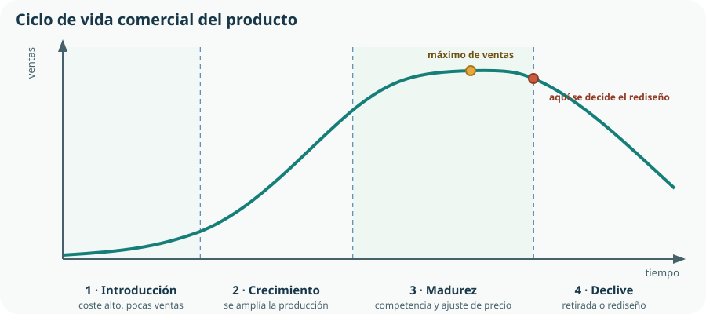
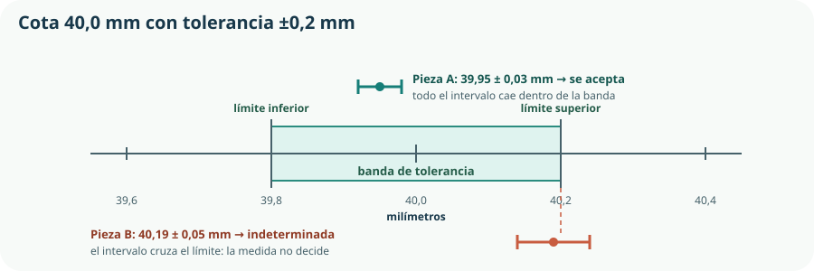

En el Tema 1 pusimos en marcha el KR-1 como proyecto. Aquí cambia la mirada: deja de ser «lo que estamos haciendo» y pasa a ser un producto, algo que alguien fabricará muchas veces, comprará, usará durante años y acabará tirando o reparando. Esa mirada obliga a responder preguntas que un prototipo nunca plantea: cuánto cuesta, cuánto se desvía una unidad de otra, qué norma debe cumplir, quién responde si falla y qué pasa con él cuando deja de servir.
- distinguir prototipo y producto, y planificar las etapas del desarrollo de un diseño;
- identificar las cuatro etapas del ciclo de vida comercial y las decisiones propias de cada una;
- aplicar el ciclo de Deming para formular un plan de mejora concreto;
- elegir el instrumento de medida adecuado y expresar un resultado con su unidad e incertidumbre;
- interpretar una cota con tolerancia y decidir si una medida permite aceptar o rechazar una pieza;
- explicar qué es una norma técnica, quién la elabora y por qué no es lo mismo que una ley;
- situar los controles de calidad a lo largo de las etapas, del diseño a la comercialización;
- describir la cadena logística de un producto y para qué sirve la trazabilidad;
- estimar el coste unitario de un producto y razonar su precio y su responsabilidad social.
1. Del prototipo al producto
Un producto es la respuesta material a una necesidad, concebida para repetirse. Esa palabra —repetirse— es la que lo separa de un prototipo. El prototipo responde a la pregunta «¿puede funcionar?»; el producto responde a «¿puede funcionar siempre, hecho por cualquiera, a un coste conocido?».
Prototipo
Ejemplar único. Se ajusta a mano hasta que funciona. Su coste real no importa. Su documentación puede estar en la cabeza de quien lo hizo.
Producto
Muchas unidades iguales. No admite ajustes individuales. Su coste unitario decide si existe. Su documentación es el producto: sin ella no se puede fabricar.
Planificación y desarrollo del diseño
El paso de uno a otro no es un salto: es una secuencia de decisiones que estrechan progresivamente las opciones. Cada etapa cierra grados de libertad y, a cambio, permite calcular con más precisión.
| Etapa | Qué se decide | En el KR-1 | Qué ya no se puede cambiar sin coste |
|---|---|---|---|
| Diseño conceptual | Qué principio de funcionamiento se elige entre los posibles. | Riego por electroválvula gobernada por una sonda capacitiva. | Nada todavía: es la etapa más barata para equivocarse. |
| Diseño de detalle | Geometría, materiales, componentes concretos y cotas con tolerancia. | Caja IP65 de 120 × 80 × 55 mm, sonda de 3,3 V, válvula normalmente cerrada. | La arquitectura. Cambiar de válvula obliga a rehacer la caja. |
| Diseño para la fabricación | Cómo se hará cada pieza y cómo se montará sin errores. | Caja impresa con paredes de 2 mm y taladros guiados; montaje en un solo orden posible. | El proceso. Cambiar de impresión a inyección cambia todo el diseño. |
| Preserie | Se fabrican unas pocas unidades con el proceso real y se mide la dispersión. | Diez kits montados por personas distintas; cuántos funcionan a la primera. | El coste unitario, que ahora ya es medible y no estimado. |
| Producción y comercialización | Series, precio, embalaje, manual, distribución y atención posterior. | Lotes de cincuenta kits con manual y repuesto de sonda. | Casi todo: a partir de aquí, cada cambio afecta a unidades ya vendidas. |
2. El ciclo de vida del producto
Ningún producto se vende igual durante toda su existencia. El ciclo de vida comercial describe cómo evoluciona su demanda desde que aparece en el mercado hasta que se retira, y sirve para anticipar qué decisiones toca tomar en cada momento.

| Etapa | Ventas y coste | Decisión técnica típica |
|---|---|---|
| Introducción | Ventas bajas; coste unitario alto porque la serie es corta y el proceso no está afinado. | Corregir los fallos que aparecen en los primeros usuarios y estabilizar el montaje. |
| Crecimiento | Ventas en fuerte aumento; el coste unitario baja al ampliar la serie. | Rediseñar para fabricar más rápido y asegurar el suministro de componentes. |
| Madurez | Ventas máximas y estables; aparece competencia y el precio se ajusta. | Reducir coste sin perder calidad, añadir variantes y preparar el siguiente producto. |
| Declive | Ventas descendentes; puede dejar de ser rentable. | Retirar, rediseñar o reorientar a otro uso; garantizar repuestos a quien ya lo compró. |
3. Mejora continua: el ciclo de Deming
Mejorar un producto no consiste en cambiar cosas que parecen mejorables, sino en repetir un ciclo corto de cuatro pasos sobre un problema medido. Ese ciclo se conoce como PDCA o ciclo de Deming: planificar, hacer, verificar y actuar.
Definir el problema con un dato, fijar el objetivo con un número y proponer una causa probable. «El 30 % de los kits de la preserie riegan de más; queremos bajar al 5 %; sospechamos de la calibración de la sonda.»
Aplicar el cambio a pequeña escala: calibrar cinco unidades con el procedimiento nuevo, no las cien.
Medir el resultado con el mismo indicador de partida y comparar. Si no hay medida previa, no hay forma de saber si mejoró.
Si funcionó, normalizar: incorporarlo al procedimiento, al plano y al manual. Si no funcionó, descartar la causa y volver a planificar con otra hipótesis.
Un plan de mejora del KR-1
| Problema medido | Acción | Indicador | Objetivo |
|---|---|---|---|
| 3 de 10 kits riegan de más. | Procedimiento de calibración de la sonda en seco y en saturación. | % de kits fuera del umbral de riego. | Menos del 5 % en el siguiente lote. |
| El montaje tarda 42 min de media. | Preformar los cables y numerar los conectores. | Minutos de montaje por unidad. | Menos de 25 min. |
| 2 devoluciones por entrada de agua. | Junta en la tapa y prensaestopas en el paso de cables. | Devoluciones por cada 100 unidades. | Cero en tres meses. |
4. Metrología: medir con criterio
La metrología es la ciencia de la medida. Aparece en el currículo junto a la normalización y al control de calidad porque las tres responden a la misma necesidad: que dos personas distintas, en dos sitios distintos, obtengan el mismo resultado y se entiendan.
Magnitudes, unidades y patrones
Medir es comparar una magnitud con una unidad. Para que esa comparación signifique lo mismo en todas partes, el Sistema Internacional de Unidades define siete unidades básicas a partir de constantes físicas, y no de objetos: desde 2019, el kilogramo se define a partir de la constante de Planck en lugar de un cilindro guardado en París.[1] En España, el Centro Español de Metrología custodia los patrones nacionales y da soporte a la cadena de calibración que llega hasta el calibre del taller.[2]
| Instrumento | Magnitud | Resolución típica | Cuándo usarlo |
|---|---|---|---|
| Regla graduada | Longitud | 1 mm | Croquis, replanteo y comprobaciones gruesas. |
| Calibre (pie de rey) | Longitud, diámetro, profundidad | 0,05 mm o 0,01 mm | Cotas de piezas mecanizadas o impresas. |
| Micrómetro | Longitud | 0,01 mm o 0,001 mm | Espesores y ajustes finos. |
| Polímetro | Tensión, intensidad, resistencia | Según escala | Circuitos del Bloque D; hay que elegir escala antes de medir. |
| Balanza | Masa | 0,1 g o 0,01 g | Consumo de material en fabricación y estudios de coste. |
| Cronómetro | Tiempo | 0,01 s | Tiempos de respuesta del sistema de control. |
Calibración y trazabilidad metrológica
Calibrar es comparar lo que marca un instrumento con un patrón de referencia mejor conocido, para saber cuánto se desvía. Si ese patrón se ha comparado a su vez con otro superior, y así hasta llegar al patrón nacional, se dice que la medida tiene trazabilidad metrológica. Sin esa cadena, un valor medido es un número sin aval: no se puede usar para aceptar o rechazar una pieza ni para reclamar a un proveedor.
5. Tolerancias e incertidumbre
Ninguna pieza sale con la medida exacta del plano, y ningún instrumento da el valor exacto de lo que mide. La ingeniería no resuelve esto persiguiendo la perfección, sino declarando de antemano cuánta desviación se admite.
cota = 40,0 ± 0,2 mm → se acepta cualquier valor entre 39,8 mm y 40,2 mm
La tolerancia es esa franja admisible, y la fija el diseñador: es una decisión, no un descuido. Estrecharla encarece la fabricación; ampliarla puede impedir que las piezas encajen. La incertidumbre de medida es algo distinto: es la franja de duda del resultado obtenido con nuestro instrumento y nuestro procedimiento. Las dos se dibujan sobre la misma escala, y ahí surge una consecuencia que sorprende:

Cómo se escribe un resultado de medida
- Con su unidad, siempre. «12,4» no es un resultado; «12,4 mm» sí.
- Con su incertidumbre y las cifras coherentes. Se escribe 39,95 ± 0,03 mm, no 39,9512 ± 0,03 mm: los decimales que la incertidumbre no sostiene no son información.
- Con su procedimiento. Instrumento, número de repeticiones y condiciones. Una medida que no se puede repetir no es una medida.
6. Normalización
Una norma técnica es un documento acordado por las partes interesadas de un sector —fabricantes, laboratorios, administraciones, usuarios— que fija requisitos, métodos de ensayo o vocabulario comunes. Su objetivo es que las cosas encajen, se puedan comparar y se puedan comprobar.
| Ámbito | Organismo | Prefijo de la norma |
|---|---|---|
| Internacional | ISO (general) e IEC (electrotecnia) | ISO, IEC |
| Europeo | CEN, CENELEC y ETSI[3] | EN |
| Español | UNE, Asociación Española de Normalización[4] | UNE |
Cuando una norma se adopta en varios niveles, los prefijos se acumulan: UNE-EN 60529 es la versión española de la norma europea que a su vez recoge la internacional IEC 60529, la que define los grados de protección IP que citaremos al elegir la caja del KR-1.
Qué normaliza una norma
Dimensiones e intercambio
Roscas, tornillería, conectores y tuberías. Es lo que permite que un tornillo M4 de cualquier marca entre en tu pieza.
Métodos de ensayo
Cómo se mide la dureza o la estanqueidad, para que dos laboratorios obtengan lo mismo.
Seguridad
Distancias, aislamientos, protecciones y grados IP. Es la parte que más a menudo se convierte en obligatoria.
Vocabulario y símbolos
Simbología de esquemas eléctricos, mecánicos y de control: el idioma común de los temas 3, 10 y 17.
7. Control de calidad, del diseño a la comercialización
El criterio 2.1 pide planificar y aplicar medidas de control de calidad «en sus distintas etapas, desde el diseño a la comercialización». La palabra clave es etapas: un control al final solo sirve para separar lo bueno de lo malo, cuando el dinero ya está gastado.
| Etapa | Control | Criterio de aceptación en el KR-1 |
|---|---|---|
| Diseño | Revisión de requisitos: cada uno con su prueba asociada. | Ningún requisito sin método de comprobación escrito. |
| Aprovisionamiento | Inspección de entrada del material recibido. | La sonda del lote nuevo mide en el mismo rango que la de referencia. |
| Fabricación | Autocontrol durante el proceso, con una plantilla o un útil de verificación. | Los taladros de la caja pasan el calibre de comprobación. |
| Montaje | Comprobación funcional unitaria, unidad por unidad. | La válvula abre y cierra en menos de 2 s y no gotea en 5 min. |
| Producto terminado | Ensayo por muestreo del lote. | En 5 unidades de cada 50 se comprueba la estanqueidad con agua pulverizada. |
| Comercialización y uso | Registro de incidencias y devoluciones; realimentación al diseño. | Toda devolución genera una entrada en el plan de mejora. |
8. Logística, transporte, distribución y trazabilidad
Un producto terminado que está en el almacén no sirve a nadie. La logística es la organización del flujo de materiales e información desde los proveedores hasta la persona que usará el producto —y, cada vez más, de vuelta, para reparación o reciclaje.
Compra de componentes: plazo de entrega, pedido mínimo y proveedor alternativo. Un solo proveedor es un riesgo de proyecto, no un ahorro.
Espacio, condiciones —humedad, temperatura— y rotación de existencias. Un lote de sondas guardado dos años puede haberse degradado.
Protege durante el transporte, informa e influye en el coste: un envío se paga por volumen tanto como por peso.
Elección del medio según coste, plazo, distancia y emisiones; entrega al punto de venta o al domicilio.
Devoluciones, reparaciones, repuestos y recogida al final de la vida útil. Es la parte que el diseño suele olvidar.
Trazabilidad: saber qué hay dentro de cada unidad
La trazabilidad es la capacidad de reconstruir el historial de un producto: de qué lote salió cada componente, quién lo montó, qué día y con qué resultado en los controles. Requiere identificar cada unidad —un número de serie o un código— y registrar lo que le va ocurriendo.
9. Coste, precio, mercado y responsabilidad social
El criterio 1.2 habla de proyectos de productos «viables y socialmente responsables». Viable significa que las cuentas salen; socialmente responsable, que salen sin trasladar el coste a otras personas o al entorno. Las dos cosas se deciden en el diseño, no en la factura.
Del coste al precio
| Concepto | Tipo | Cálculo | Por unidad |
|---|---|---|---|
| Componentes electrónicos y válvula | Variable | Lista de materiales | 18,40 € |
| Filamento y consumibles | Variable | 95 g × 0,024 €/g | 2,28 € |
| Mano de obra de montaje | Variable | 25 min × 12 €/h | 5,00 € |
| Diseño y documentación | Fijo | 120 h repartidas entre 100 unidades | 9,60 € |
| Amortización de impresora y utillaje | Fijo | 800 € entre 100 unidades | 8,00 € |
| Embalaje y transporte | Variable | — | 3,10 € |
| Coste unitario total | — | — | 46,38 € |
precio = coste unitario + margen y el margen debe cubrir garantía, devoluciones e imprevistos
Mercado y responsabilidad
- Conocer a quién va dirigido. Un kit para un instituto y otro para un balcón particular no comparten precio, embalaje ni manual, aunque el circuito sea el mismo.
- Comparar con lo que ya existe. Si un producto comercial equivalente cuesta 35 €, el argumento del KR-1 no puede ser el precio: será la reparabilidad, la documentación abierta o la adaptación al huerto escolar.
- Responsabilidad en la cadena. Un componente barato puede serlo por condiciones laborales o ambientales que nadie paga en la factura. Elegir proveedor es una decisión técnica y ética.
- Responsabilidad en el uso y en el final. Instrucciones claras, advertencias de seguridad reales, repuestos disponibles y desmontaje posible al final de la vida útil.
Comprueba lo que has aprendido
Este tema se demuestra pasando de «funciona» a «puedo fabricarlo, medirlo, justificar su precio y responder por él».
| Aspecto | Qué debes demostrar | Evidencias posibles |
|---|---|---|
| Ciclo de vida y mejora | Que sitúas el producto en una etapa y propones una mejora medida, no una ocurrencia. | Etapa razonada del producto, un ciclo PDCA completo con indicador, objetivo y resultado medido. |
| Medir y tolerar | Que eliges el instrumento adecuado, expresas el resultado con unidad e incertidumbre y decides sobre una tolerancia. | Acta de medidas con instrumento y repeticiones, una cota con tolerancia justificada y un caso de decisión indeterminada. |
| Normalizar y controlar | Que citas al menos una norma aplicable a tu producto y planificas controles en varias etapas. | Norma citada por código y año, tabla de controles por etapa con criterio de aceptación. |
| Comercializar con responsabilidad | Que estimas el coste unitario, distingues fijo de variable y razonas el precio y los impactos. | Lista de materiales valorada, cálculo del efecto de la serie y un párrafo sobre impacto social y ambiental. |
Prueba de realidad: entrega a otro equipo tus planos, tu lista de materiales y tu procedimiento de montaje, y que fabriquen una unidad sin preguntarte nada. Lo que tengan que preguntarte es exactamente lo que falta en tu documentación.
Glosario del tema
- Amortización
- Reparto del coste de un equipo o utillaje entre las unidades que contribuye a producir.
- Aseguramiento de la calidad
- Conjunto de medidas organizativas que evitan que aparezcan defectos, frente al control, que los detecta.
- Calibración
- Comparación de lo que indica un instrumento con un patrón de referencia para conocer su desviación.
- Ciclo de Deming (PDCA)
- Ciclo de mejora continua en cuatro pasos: planificar, hacer, verificar y actuar.
- Ciclo de vida comercial
- Evolución de las ventas de un producto en cuatro etapas: introducción, crecimiento, madurez y declive.
- Coste fijo
- Coste que no depende del número de unidades producidas y se reparte entre ellas.
- Coste variable
- Coste que se repite en cada unidad producida.
- Control de calidad
- Comprobación planificada de que un producto o proceso cumple los criterios establecidos.
- Exactitud
- Proximidad entre el valor medido y el valor verdadero de la magnitud.
- Incertidumbre de medida
- Intervalo dentro del cual se estima que se encuentra el valor verdadero de una magnitud medida.
- Logística
- Organización del flujo de materiales e información desde los proveedores hasta el uso y la retirada del producto.
- Logística inversa
- Flujo de retorno del producto para devolución, reparación, repuesto o reciclaje.
- Marcado CE
- Declaración del fabricante de que su producto cumple la legislación europea aplicable; no es un certificado de calidad.
- Metrología
- Ciencia de la medida: magnitudes, unidades, instrumentos, procedimientos e incertidumbre.
- Muestreo
- Control realizado sobre una parte del lote, elegida de modo que permita conclusiones sobre el conjunto.
- Norma técnica
- Documento consensuado que fija requisitos, métodos de ensayo o vocabulario de aplicación voluntaria.
- Normalización
- Actividad de elaborar y difundir normas técnicas para que los productos encajen, se comparen y se comprueben.
- Obsolescencia
- Pérdida de utilidad de un producto por avería irreparable, por aparición de algo mejor o por dejar de parecer deseable.
- Preserie
- Pequeña producción realizada con el proceso definitivo para medir su dispersión y su coste real antes de fabricar en serie.
- Resolución
- Menor variación que un instrumento es capaz de mostrar; no indica por sí sola su exactitud.
- Tolerancia
- Franja de desviación admitida respecto a una cota nominal, fijada por el diseñador.
- Trazabilidad
- Posibilidad de reconstruir el historial de un producto: lotes, operaciones y resultados de control.
- Trazabilidad metrológica
- Cadena de calibraciones que une una medida con el patrón nacional o internacional de su unidad.
Resumen esencial
- Un producto es un prototipo que puede repetirse: exige documentación, coste conocido y dispersión acotada.
- El desarrollo del diseño avanza cerrando grados de libertad —concepto, detalle, fabricación, preserie, producción— y corregir un error cuesta más en cada etapa.
- El ciclo de vida comercial tiene cuatro etapas y la decisión de rediseñar se toma al final de la madurez, no en el declive.
- El ciclo de vida comercial no es el ciclo de vida ambiental: el primero mide ventas; el segundo, impacto desde la materia prima al residuo.
- El ciclo de Deming mejora un problema medido en cuatro pasos y termina normalizando el cambio por escrito.
- Medir es comparar con una unidad; el Sistema Internacional define las unidades a partir de constantes físicas y una cadena de calibración las lleva hasta el taller.
- Resolución no es exactitud: un instrumento puede mostrar muchas cifras y equivocarse.
- La tolerancia es una decisión del diseñador; la incertidumbre, una propiedad de la medida. Si el intervalo de medida cruza el límite de tolerancia, la medida no decide.
- Una norma técnica es un acuerdo voluntario que se vuelve obligatorio cuando una ley o un contrato la cita; el marcado CE lo declara el propio fabricante.
- La calidad se controla por etapas, del diseño a la comercialización; asegurarla organizando el proceso es mejor que detectarla al final.
- La logística abarca aprovisionamiento, almacenamiento, embalaje, transporte y retorno; la trazabilidad permite acotar el alcance de un fallo.
- El coste unitario suma costes variables y costes fijos repartidos; ampliar la serie reduce el segundo término.
- Un producto responsable no traslada su coste a las personas ni al entorno, y eso se decide al diseñar.
Fuentes y recursos fiables
- [1] Oficina Internacional de Pesas y Medidas (BIPM) — Unidades de medida del Sistema Internacional.
- [2] Centro Español de Metrología. Patrones nacionales, calibración y trazabilidad metrológica.
- [3] CEN-CENELEC — Organismos europeos de normalización (en inglés).
- [4] UNE — Asociación Española de Normalización.
- [5] Comisión Europea — Marcado CE (en inglés).
- [6] AENOR — Certificación y evaluación de la conformidad.
- [7] Real Decreto 243/2022, de 5 de abril. Enseñanzas mínimas del Bachillerato.
- [8] Decreto 64/2022, de 20 de julio (BOCM). Currículo de Tecnología e Ingeniería I, bloque A y competencia específica 2.